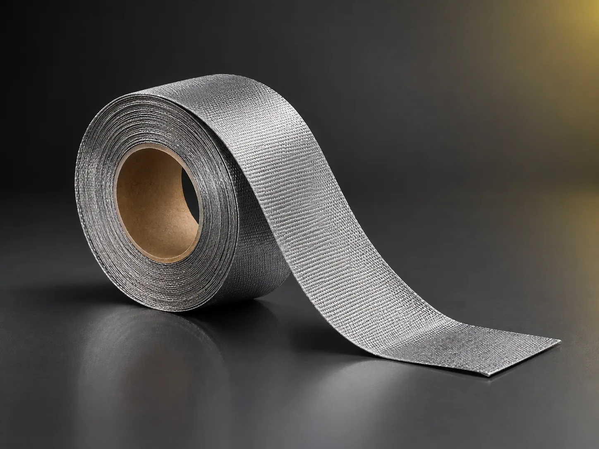

福建强纶新材料股份有限公司 · 新三板 872336
100% 不锈钢纤维编织而成的套管、织带与机织布，耐高温、柔软透气、导电防静电，兼具隔热保温、吸音减震与缓冲性能，是玻璃工业耐高温缓冲材料的首选。
一句话定义：用金属纤维纱织成的耐高温柔性织物，在高温接触面上替代玻纤与石棉，既不划伤工件也不掉屑。
耐高温、柔软、导电、耐用性高、透气、隔热保温、吸音减震、可过滤。成品经后整理定型，正常裁切使用不易起毛掉屑；尖锐切口或强摩擦工况建议预先封边，降低掉丝风险。

| 型号 | 品类 | 标准材质 | 耐温 | 特点与适用 |
|---|---|---|---|---|
| TGZ112 | 弹性套管 | 316L 不锈钢纤维 | 350℃ 长期 / 1100℃ 短时 | 弹性大、回弹好；辊轴、外径固定工件紧裹防护 |
| TGBX112 | 编织套管 | 316L 不锈钢纤维 | 350℃ 长期 / 1100℃ 短时 | 柔性好、可拉伸；管线、热电偶引线穿线布线 |
| TGBX113 | 编织套管 | 316L 不锈钢纤维 | 350℃ 长期 / 1100℃ 短时 | 同上，规格区间不同 |
| FSE112 | 金属纤维绳 | 316L 不锈钢纤维 | 350℃ 长期 / 1100℃ 短时 | 圆形绳；环形密封、穿绳绑扎 |
| ZDJX113 | 针织金属套 | 316L 不锈钢纤维 | 350℃ 长期 / 1100℃ 短时 | 适形性好，包覆异形件 |
| ZDJF113 | 针织金属套 | 316L 不锈钢纤维 | 350℃ 长期 / 1100℃ 短时 | 同上，规格区间不同 |
| — | 金属纤维织带 | 316L 不锈钢纤维 | 350℃ 长期 / 1100℃ 短时 | 标准厚度 0.35–0.5mm；常规幅宽 1000 / 1200 / 1500mm，支持分切与窄幅定制 |
* 如需更高耐蚀或更高耐温，可定制铁铬铝材质，起订量另议。1100℃ 为短时峰值，不建议长时间持续使用；高温有氧环境下氧化速率会明显加快。特殊厚度需评估开模。
玻璃深加工：钢化炉陶瓷辊道套管、测温探头与热风管路包覆、钢化齿条包覆、玻璃成型模布、夹具包覆套、吸盘毡，杜绝玻璃划伤、提升良品率。
防静电与电磁屏蔽：生产线设备静电泄放、接地搭接、中低频电磁屏蔽；半成品与成品库房、空气对流不良场所的导电消静电装置。
其他高温工况：耐高温输送带、隔热保温、吸音减震、燃烧器用布。
TGZ112、TGBX112、TGBX113、FSE112、ZDJX113、ZDJF113 标准材质均为 316L 不锈钢纤维；如需更高耐蚀、更高耐温，可定制铁铬铝材质，起订量另议。
350℃ 为长期连续推荐使用温度；短时峰值可以到 1100℃。1100℃ 不建议长时间持续使用，高温有氧环境下氧化速率会明显加快。
TGZ112 弹性套管弹性大、回弹好，适合辊轴、外径固定工件紧裹防护；TGBX112/113 编织套管柔性更好、可拉伸，适合管线、热电偶引线，方便穿线布线。
圆形绳适合环形密封、穿绳绑扎；方形绳接触面积更大，适合平面压合密封、缓冲减震，优先看客户密封槽结构。
可以。标准厚度 0.35~0.5mm，常规幅宽 1000/1200/1500mm，支持分切、定制窄幅织带；特殊厚度需要评估开模。
成品经过后整理定型工艺，正常裁切使用不易起毛掉屑；但尖锐切口、强摩擦工况下，建议预先做封边处理，降低掉丝风险。
316L 金属纤维连续交织，本身具备良好导电能力，可用于静电泄放、接地搭接、中低频电磁屏蔽；如需精确电阻指标，可提供试样实测。
316L 基材具备优良耐弱酸、盐雾能力；强还原性酸、浓氯离子长期浸泡工况，建议升级合金材质，先做盐雾试样验证。
标准规格按米销售；常规现货小批量几米即可试样；特殊定制规格（特殊幅宽、特殊合金）有最低起订长度。
可以提供免费小样（少量长度），运费到付；标准现货样品 1~3 天寄出。